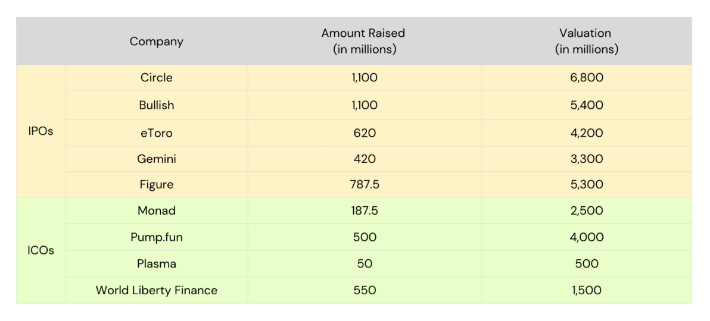
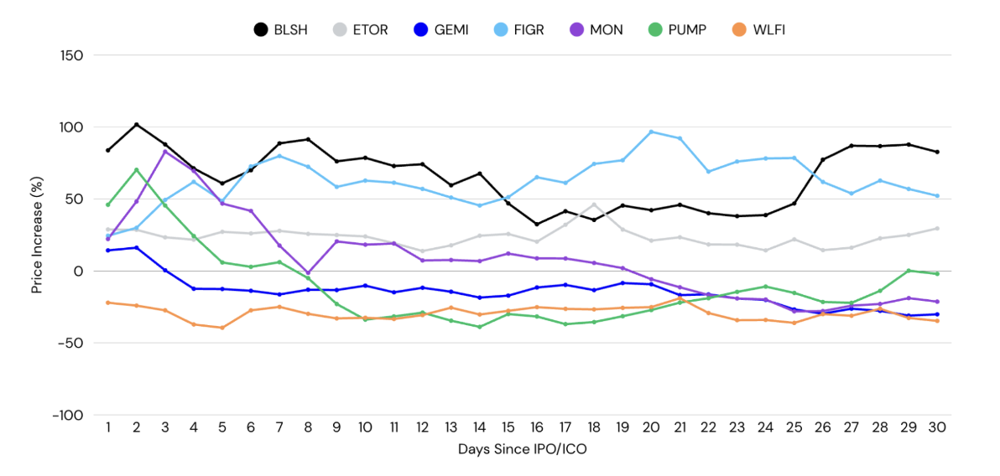
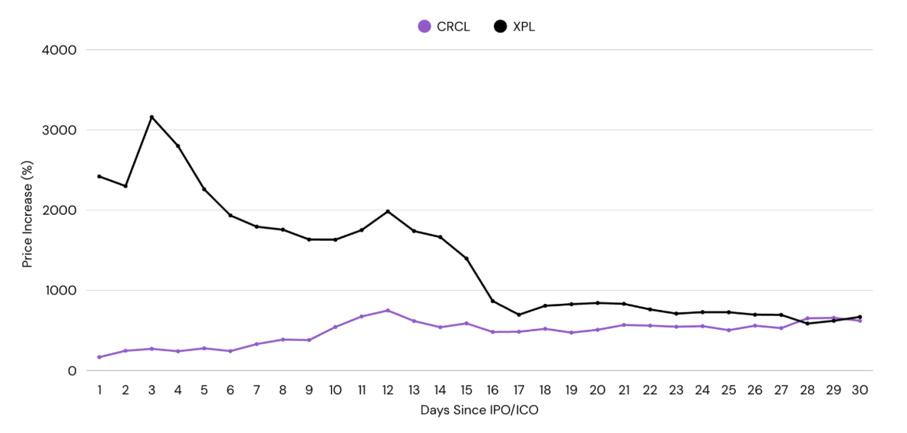
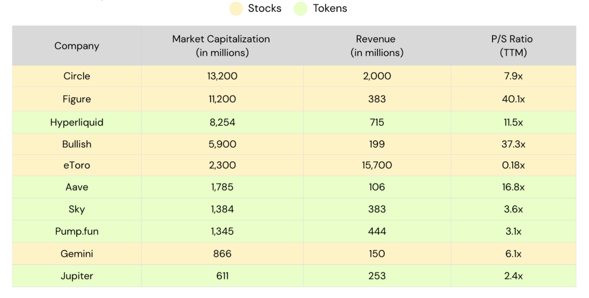
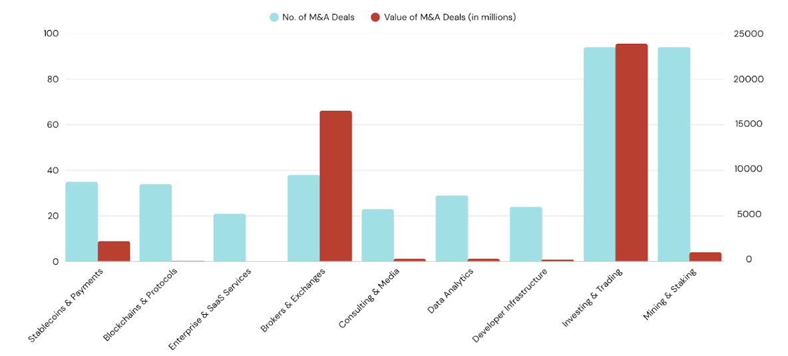
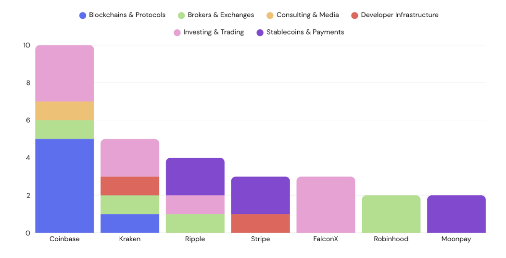

Key Takeaways:
The token playbook is over. Steep valuations and declining liquidity has caused a dent in investor confidence and we see a shift in flows towards equities.
Tokens and equities have similar upside potential, but vastly different risk profiles. Tokens peak faster (<30 days), facing greater volatility while equities maintain steadier gains over longer timeframes.
Equities command higher valuation premiums over tokens. The premium can be attributed to institutional access requirements, index inclusion potential, and enhanced trading strategies enabled by equities.
P/S ratios provide a useful baseline for evaluating companies, but valuation dispersion reflects the importance of other factors including regulatory moats, revenue diversification, shareholder value and sector sentiment.
M&A activity hit a 5-year high as consolidation accelerates. Acquiring capabilities is proving faster than building them, and regulatory compliance is driving strategic acquisitions.
The State of Token Launches
The crypto industry has reached an inflection point. Billions are flowing in, institutional interest is at its peak and regulations are becoming friendly — yet, for builders and users it feels more bleak than ever. The growing chasm between institutional inflows and crypto-native morale is part of a larger problem: the original ethos of decentralization and cypherpunk experimentation seems to be fizzling out with centralized entities coming in and having huge influence.
Crypto has also always thrived in a high-stakes, casino-like environment which has been slowly stripped away as token performance has declined sharply. This is also driven by extractive events which affect retail investors significantly, causing liquidity to exit the markets.
According to a report by Memento Research, over 80% of token launches in 2025 are currently below TGE price. Projects have been hit particularly hard with high volatility and general lack of demand in tokens as a result of steep valuations that are difficult to justify and sustain. Upsides are also rare as most tokens face significant selling pressure from TGE — due to early profit taking, lack of actual confidence in product or poor tokenomics (airdrops, CEXs etc.). This has put a dent in investor and retail interest while events like 10/10 have further exacerbated the outflows for crypto — raising questions on the core infrastructure of the industry.
The Rise of IPOs
Meanwhile in the traditional world, IPOs have been gaining strong traction among crypto companies, with many notable public debuts in 2025 and more filing for upcoming IPOs. Data shows that the amount raised for crypto IPOs increased by 48x from 2024, raising over $14.6bn in 2025. A similar rate of growth was seen in M&A deals too, with incumbent core companies looking to diversify their offerings to gain a greater share of the pie — including taking the decentralized market share under their wing, which we explore more of below. Overall, the outperformance of these companies have demonstrated a significant appetite for exposure to digital assets — which is likely to accelerate going into 2026.
Where Liquidity is Flowing
Over the past year, we've seen significant amounts being raised for high-profile IPOs and ICOs. The table below shows the amount raised and initial valuation for each of the companies.

IPOs vs ICOs: Amount Raised and Valuation (in millions)
From this, we observe that valuations for IPOs and ICOs are relatively close. Certain ICOs like Plasma were specifically priced below institutional investors' valuation with the aim of providing greater upside and access for retail investors. On average, the percentage of public shares ranges between 12-20% for IPOs and between 7-12% for ICOs. World Liberty Finance was a clear outlier, offering over 35% of total supply up for sale.
Analyzing the performance of both ICOs and IPOs, tokens can be associated with greater short-term volatility, drawdowns, and a shorter time to peak (<30D). On the other hand, equities tend to post steady gains over a longer timeframe. It is worth taking note that despite this, both are similar in terms of upside.

30-Day Price Performance: IPOs vs ICOs
An exception to this would be CRCL and XPL, which experienced massive gains from the outset, offering investors a 10-25x upside. Nonetheless, their performance also followed the above mentioned trend — whereby XPL saw 65% drawdown from its peak within 2 weeks while CRCL steadily climbed during that period.

CRCL and XPL 30-Day Price Performance (outliers excluded from main chart)
Revenue: Evaluating the Equity Premium
Diving deeper into revenue numbers, stocks tend to trade at a higher premium in comparison to tokens in general, ranging from 7-40x and 2-16x respectively. This could be attributed to enhanced liquidity achieved by a variety of factors:
- Institutional Access: Despite growing positive sentiments towards holding digital assets on balance sheets, it remains limited to funds (particularly pensions or endowments) that hold securities-only mandates. Opting for an IPO opens up companies to this pool of institutional capital.
- Index Inclusions: Tailwinds for growth in the public sector are much stronger than those on-chain. Coinbase joined the S&P500 in May 2025 as the first crypto company to be included in the list. This could have contributed to indirect buying pressure from the accumulation and holding of index-tracking funds/ETFs.
- Alternate Strategies: A larger variety of institutional strategies can be run through options and leverage for equities as compared to tokens on-chain which often lack liquidity and counterparties.

P/S Ratio Comparison: Stocks vs Tokens (TTM)
Overall, the P/S ratio shows how the company is valued based on trailing 12 months revenue and can help to determine whether a company is under or overvalued when compared with competitors. However, factors that would reflect investor sentiment beyond numbers are not accounted for. Some factors to consider when evaluating stocks/tokens include:
- Moat & Diversification: This is key in the fast-moving digital asset industry. Premiums are being paid for licenses and regulatory compliance while varied business offering strengthens the value proposition of the core business beyond pure revenue numbers. For example, Figure launched its own RWA lending pool accessible by retail and institutional investors and was the first to receive SEC approval for a yield-bearing stablecoin ($YLDS). Bullish is a regulated exchange but also has other businesses such as CoinDesk under their wing, which increases its value beyond just trading services. In comparison, eToro might seem 'undervalued' with an extremely low P/S ratio but a closer analysis would reveal that growth in revenue increased in tandem with cost which is not the best scenario. Furthermore, the company is purely focused on providing trading services and has little differentiation with low margins.
- Shareholder Value: Returning capital to investors through buybacks are common in both stocks and tokens, especially for high revenue generating companies. Hyperliquid has one of the most aggressive buybacks programs, with 97% of revenue being directed towards buybacks. Since inception, the assistance fund has bought back over 40.5m HYPE tokens, which is over 4% of the total supply. Such aggressive buybacks definitely had an impact on price which could boost investor confidence as long as revenue remains stable and the sector still has room to grow.
- Sector Sentiment: High growth sectors determined by institutional or regulatory happenings naturally command a premium as investors look to get exposure. For example, Circle's stock price went parabolic and reached a peak P/S ratio of ~27x soon after it went public in June 2025. This could be attributed to the passing of the GENIUS Act — a framework working towards the legitimization of stablecoin adoption and issuance, shortly after Circle's IPO, which would position Circle as a major beneficiary.
M&As: The Great Consolidation
According to reports, crypto M&A activity has reached a 5-year high in 2025 — driven by a wave of TradFi firms making a push alongside friendlier regulatory sentiments. A boom of Digital Asset Treasuries (DATs) occurred after Trump's administration, as having exposure to digital assets on balance sheets became less contentious. Companies also shifted their focus to acquiring as it was a more efficient way in obtaining certain licenses to become more compliant. In general, the introduction of proper frameworks paved the way for the acceleration of M&As.
Looking into the past year, we see a clear uptick in the number of deals across all categories. The top 3 categories below emerged as higher priority for institutions:
- Investing & Trading: This includes infrastructure for trade settlement, tokenization, derivatives, lending and DATs.
- Brokers & Exchanges: Regulated platforms with a digital asset focus.
- Stablecoins & Payments: Includes on/offramps, infrastructure and apps.
These 3 categories accounted for over 96% of deal value in 2025, hitting over $42.5bn.

M&A Deals by Sector: Number and Value (in millions)
The top acquirers include Coinbase, Kraken and Ripple — who have dabbled in various categories. Particularly, it solidifies Coinbase's ambition to become the 'everything app' with a key focus on bringing on-chain to the masses by acquiring legacy and innovative dApps. This could be attributed to increased competition between exchanges and the quest to become the all-in-one app to capture their own crowd and flows.

Top Acquirers by Category
Other companies such as FalconX and Moonpay have doubled down within their own category, with complementary acquisitions that would allow them to provide all encompassing services.
What's Next for 'Token' Launches?
Despite current market conditions and sentiments, we believe that 2026 will continue to usher in many tailwinds for the digital asset space. We expect to see an increased number of companies set to go public, which is a net positive for the industry. It provides greater accessibility and exposure to capital and investor pools, growing the pie as a whole. Companies that are next in line for IPOs include:
- Kraken: Filed an S-1 registration statement with the SEC in November 2025, with strong expectations for an early 2026 IPO.
- Consensys: Reportedly working with Goldman Sachs and JP Morgan on a mid 2026 listing.
- Ledger: Targeting a $4bn IPO working with Goldman Sachs, Jeffries and Barclays.
- Animoca: Planning to go public on the Nasdaq in 2026 through a reverse merger with Currenc Group Inc.
- Bithumb: Aiming for a KOSDAQ listing in 2026 at a $1bn valuation, underwritten by Samsung Securities.
The path forward isn't choosing between TradFi validation and crypto-native innovation — it is convergence. For builders and investors alike, it means prioritizing fundamentals and building useful products generating real, sustainable revenue. The shift in mindset towards the long-term might cause some shake ups, but those who adapt will be able to capture the next wave of value creation.
Crypto is dead, long live crypto.